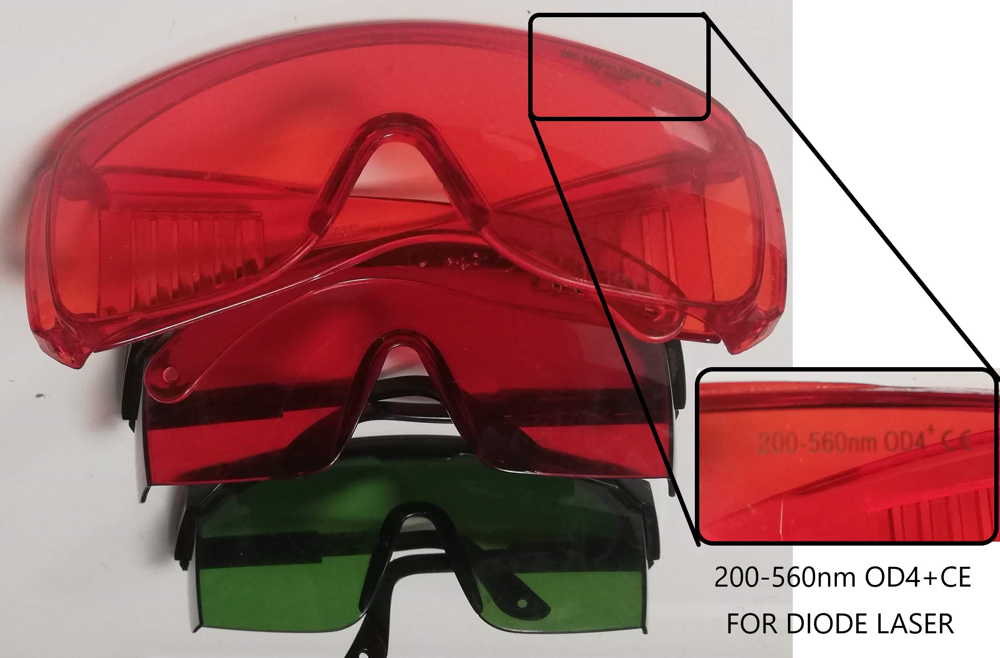

Mechanical Design, Machine Design
Mechanical Design (part 1 of 2)
Group assignment
- Design a machine that includes mechanism + actuation + automation
- Build the mechanical parts and operate it manually.
- Document the group project
Individual Project
- Document your individual contribution.
Machine Design (part 2 of 2)
Group assignment
- Actuate and automate your machine.
- Document the group project
Individual Project
- Document your individual contribution.
Learning outcomes:
- Work and communicate effectively in a team and independently
- Design, plan and build a system
- Analyze and solve technical problems
- Recognize opportunities for improvements in the design
Have you?
- Documented the machine building process to the group page
- Documented your individual contribution to this project on your own website
- Linked to the group page from your individual page as well as from group page to your individual pages
Group Assignment
For other group assignments go to group assignment page
This assignment was completely done by me as I am the only student at the Algarve FabFarm this year.
Frankenlaser cutter
Design Files and Gcode files @ Gitlab Fabcloud project repo

I gave it the name Frankenlaser because many of its parts come from retired machines I once design and fabricated. Its a machine again just like my CNC made with parts I had laying around as well as commercial parts.
I designed the machine with solidworks and used the CNC in the bottom of this page that I also designed to cut the carbon fiber and the OSB parts.
Mechanical Design (part 1 of 2)

With the mechanical design ready I started preparing the bits and pieces.

I am using 30x30 aluminum profiles, they came in 3 meters bars and needed to be cut to size.
the most precise way I could cut the profiles was with a wood saw. I know that it is made for wood, but also know that I could cut aluminum as long as I use it slowly. I then leveled the saw blade to 90 degrees in reference to the table saw.

The cut was perfect.

Next I began with the tracks, they were very dirty. So I started with the cleaning.
And like magic they are clean; first I removed the tracks from the sliders and left them aside. I used WD40, a scotch brite sponge for the rust and acetone to remove oil and dust. I oiled it finally with machine oil.
Now the sliders... equally dirt I disassembled the plastic covers and dropped the little bearing balls into a recipient.

With the sliders disassembled I used the same cleaning steps with the same products as before.

With a paper towel I dried it all
And again like magic they are like new.

To have an idea of the final product I placed the parts resting on top of each other. Nice!

A different perspective.

The view from ArtCam.

I then started cutting the carbon fiber. It cuts easily on my CNC but I was in a hurry so I did not want to clean double face tape and have to clean its glue latter. This decision will have consequences, watch the next videos for it.
Here I drill the holes.
In this video I cut many of the contours because I did not use double face tape or tabs the parts jumped from the stock in a way they could meet demise if touched by the blade. So I removed the pieces as the machine spit it out.
All the parts cut and ready for assembly.
With a digital angle finder I made sure the parts were squared.
Here the support of the other side.

Here the laser head support assembled.

And now it is assembled.
And the laser head attached. The laser head will hold the focus lens when the laser is ready.
Moving the X axis.
Moving it again.
Here the hole assembly is ready.
Now I test all axis by hand and this part one is done.
Machine Design (part 2 of 2)
Index
- Milling and Assembly External Frame
- Frame Assembly to Axis
- Wiring
- Burning the firmware
- First Test
- Setting up GRBL
- Second Test
It moves!
The machine is speaking and with its immature voice it spoke "Hello World"
How did I get there? Lets see the steps:
- Milling and Assembly External Frame
- Frame Assembly to Axis
- Wiring
- Burning the Firmware
- First Test
- Setting up GRBL
- $3 = (10) this inverts the Y axis
- $100 = (52.609)
- $101 = (52.609)
- $110 = (15000)
- $111 = (7000)
- $120 = (300)
- $121 = (300)
- Second and Final Test for this assignment.
I design the frame with Solidworks. The techniques already explained in the week of Computer aided design and Computer controlled machining.
The design files are here.
Next using the software mach3 I started the job. The material used was 19mm OSB. The milling bit was a 3.175mm and when I chose the tool I offset it by -0.1mm to compensate for imperfections and allow an easier fit, just like explained in the group assignment Computer controlled Machining.
I split the milling in two jobs holes job and contour job. The feed rate was max 2500 mm/Minutes. Gcode here and here.
All the fightings had correspondent holes that where also used as clamps. This way I was sure that there would be no collisions. As I only fitted them after the holes job, and before the contour job.
After the milling job me and my son started sanding the sides and the surface for a better fit and finish.
All sanded here.
The assembly went smoothly and we the only tools used were a rubber mallet and a screwdriver.

The frame is super sturdy! We were really happy with the result.

The axes were secured with "t" slot nuts; I'm not sure if this is the correct name.

Big mess now as I was using many more tools like a caliper, a digital level and square, so I would have a squared machine.
The laser tube was temporarily fit here just to see if things fit well.

Here is an overlook of the machine almost finished.

The board I m using for this assignment is an Arduino Uno. Bellow the diagramof the UNO GRBL wiring.

I tested 3 methods to burn the grbl firmware. The first method I used the incredibly practical software Avrdudessits a gui version of AVRDUDE.
The usage was quite simple. Plug the programmer or the usb directly to the Arduino. Next Sect the Programmer, in my case usbasp, or Arduino for USB. Next select the hex file, downloaded from grbl repo, press the button to the right in other to detect the MCU, then press Go to start the firmware burn.

The next method I tried was using the software LaserGRBL. Clicking on Tools, Flash GRBL Firmware, then...

A dialog will show that allows the selection of the target board, in my case Arduino Uno, the firmware version, the port and bound rate. Next...

The screen will show the successful completion.

The next method I tried was compiling and burning the firmware using the Arduino IDE. For this method I followed the method described at the Gnea/GRBL wiki. First I modified the two lines bellow in other to enable dual motor for the y axis. I did were not successful so far and because of lack of time I ended up not using it, anyway I documented the method here for in the future I will try it again with more time.
Another referece for Getting dual axis self square gantry working is found at the Protoneer Product Forum, but again in the future I will look into that.
Start by downloading the grbl firmware then add it as a library to the arduino.
Open the GrblUpload Arduino file example and compile the upload just like described in Embedded Programming week changing the MCU for Arduino UNO board.
Here I test the motor and its strength and temperature (by touch and thermometer). I do that in other to properly set the DIP switches.
After the tests I decide to use a 2 amps, the motor is rated for 1.5 amps but during all the tests the motor would never pass more than 1 amp and the temperature remained under 45 degrees.
The setting is done by selecting the dip switches. 4 - ON (down), 5 - OFF (UP), 6 - OFF (UP)
Here I try moving the motors for the first time using the computer. The X axis moved well but the Y axis no. I believe this was due to wiring so I reviewed it all over again. I ended up disabling the double motor on the Y axis (sparsely documented) and wired the two motors in the Y axis in parallel.
Here I measured the effective movement against the movement commanded. I take a note and then using the Rule of three, basically a/b=c/d
Where in my test a=118.8 (real movement), b=25(desired movement), c=250 (current steps per mm) and d=X.
After doing the math I get rhe result 52.609 that I replace in the GRBL setting $100 and $101.

Bellow is the print of the settings I used for the the machine so far. This wiki shows all the configurations of Gnea/GRBL.

Because this assignment requires that I show the control over the machine I made. I present here a "Hello World". I am running out of time, I would love to come back to this documentation later and finish the laser cutter but now I need to focus on the other assignments. So for now its a Sharpie attached with tape.
For the Future...
Recognize opportunities for improvements in the design!
The Machine is not finished yet. It will become a laser cutter by the end of the cycle. I will update here its updates. So far I have the following issues to solve:
Dangerous Zone ahead.
Warning
Wear Safety glasses, make sure you know where and how to operate the fire extinguisher, never leave laser unattended!
Risk of Fire
The laser cutter its a machine that wants to catch on fire, if every thing is working it won't, but if there is a failure and the laser stays in the same place or if the air assist stops working there is a hight risk of fire, for this reason never leave the laser untended.

Laser Radiation
The laser beam can blind you or burn your skin in nano seconds for this reason never operate it with the lid open, aways wear the safety glasses for the type of laser you are using.
CO2 laser cutters are typically 10600nm wavelength, in our lab this is the correct glasses.

Diode laser cutters are typically in the range of 200-550nm wavelength, in our lab this is the correct glasses.

Extra Credit hum?!
The Future is now!
The machine week was completed with actuation and automation of my machine as far as the requirements in the assessments page for this week, but that is not stooping me from making my machine become a laser cutter! I only can't do it and at the same time finish the other assignments that I have due.
Well that is not stooping me from improving the machine in any free time that I will have.
Lets hook the laser
I found this info at this grbl issue page
As for the laser tube itself I found a beautiful diagram here that I copied below.
Made my own diagram as well
Here I show the solder I did from the Anode wire to a crocodile connector. The terminals from the laser cutter should not be soldered as the heat differences could crack the co2 laser tube.
This photo shows the Anode wire connected to its terminal as well as the water tube at the exit point of the coolant.
Here I fit the water protection sensor switch to the laser power. This will prevent the laser from shooting without coolant.
Laser Coolant
To keep the laser tube cool, I fitted a small water fountain to a plastic container filled with automotive antifreeze. I used plane water in the past but bacterial growth always bugged me. In the future I hope to make this a closed system with a automotive radiator.
In this video you can see the laser tube being filled with antifreeze, sorry it gets upside down... At least you can see the coolant flowing
Here I test the water protection. As I remove the water pump power plug the LED turns off at the laser power source.
Lets test it.
In this test I show the laser beam without the mirrors aiming it at a wood piece. It works, quite a display of power!
Mirror Alignment
The mirror alignment is the trickiest part.
I already had experience with laser alignment before but here follows some good tutorials on how to do it:
The way I have done is documented bellow.
- I took strips of painters tape and covered the hole in the first mirror support. Do not do this with a mirror in place as the tape glue and material when burned will stick to the mirrors ruining it!
- Hit the pulse button, or in my case shorted the L terminal to ground inn the power source of the laser for a millisecond.
- Then I check where the laser head hit the tape. The goal is to hit the center of the mirror support's hole using the tape as reference.
- When needed adjust the laser tube. In my case the dot was a bit to to the upper left side of the hole. So I adjusted the laser tube a bit. and got a better result next try. Next you should not move the laser tube anymore.
- Fit the first mirror being careful not to touch it with bare hands. I used a washer to turn and close the mirror backing nut.
- The first and second and third mirrors one after the other are then adjusted using the same procedure with the top and left knobs looking from behind the mirror support. The objective now is not to shoot at the middle of the second mirror but to shoot 2 times in the same spot, the first with the y gantry (first mirror) near and the second time with the gantry further like I show in the video. repeat this process for each mirror until you get to the lens.
- The lens should be fit with the concave side up. Shot again and make sure the beam is in the center and is a round burn as opposed to a half moon that would mean the beam is hitting the walls of the tube after the third mirror.
Problem and Solution
The first issue was the y axis stopped moving for a reason I still don't get it. I tested a different stepper controller and also rewire every thing so I could debug it.
In the end I decided it was not the wiring so I recompile GRBL like I explained earlier, switching the Y direction bit (pin) 6 for 7 in the file cpu_map.h and it worked. Not sure what really caused it.
Next issue was the scale of the X axis was completely off. I had created a simple 10 mm square and had it cut but instead it created a long rectangle.
I solved the issue simply reapplying the steps per mm again to GRBL controller Eprom. and it started working as I can show in these pics.
The inside measurement of the square is 10.2mm
The outside measurement of the square is 9.9mm
Calculating the inside and outside measurements would give a kerf size of 0.15mm, not too bad for first tests but can be improved with better focus. But I will leave that for Computer controlled cutting week.